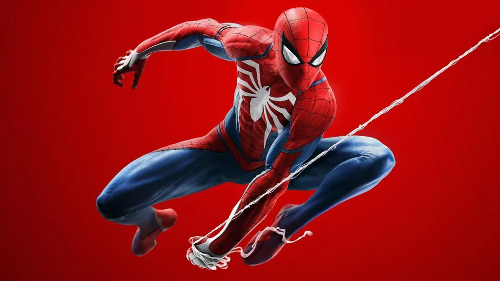
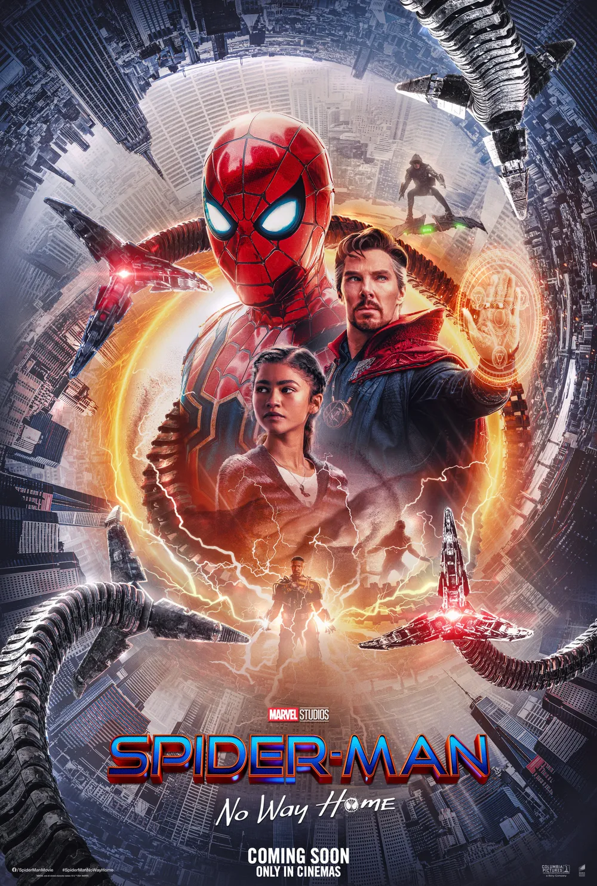

About 스파이더맨
스파이더맨(본명: 피터 파커)은 마블 코믹스의 대표적인 슈퍼히어로입니다. 방사능에 오염된 거미에 물려 거미 같은 능력을 얻고, "큰 힘에는 큰 책임이 따른다"는 교훈을 가슴에 새기며 뉴욕을 지키는 영웅이 되었습니다.
성격
스파이더맨은 유머감각이 뛰어나고, 낙천적이며, 책임감을 강하게 느끼는 인물입니다. 어려운 상황에서도 농담을 잊지 않으며, 주변 사람들을 소중히 여깁니다. 또한 정의감이 강하고, 평범한 일상과 히어로로서의 삶 사이에서 고뇌하는 인간적인 면모를 가지고 있습니다.
스파이더맨 친구들
- 메리 제인 왓슨 (Mary Jane Watson)
- 해리 오스본 (Harry Osborn)
- 그웬 스테이시 (Gwen Stacy)
- 닥터 스트레인지 (Doctor Strange)
- 아이언맨 (Tony Stark)
마블 유니버스
마블 유니버스는 수많은 슈퍼히어로와 빌런이 존재하는 세계입니다. 스파이더맨은 어벤져스의 일원으로 활동하며, 캡틴 아메리카, 토르, 헐크 등과 함께 수많은 사건을 해결해왔습니다. 영화, 드라마, 게임 등 다양한 매체를 통해 세계적으로 사랑받고 있습니다.